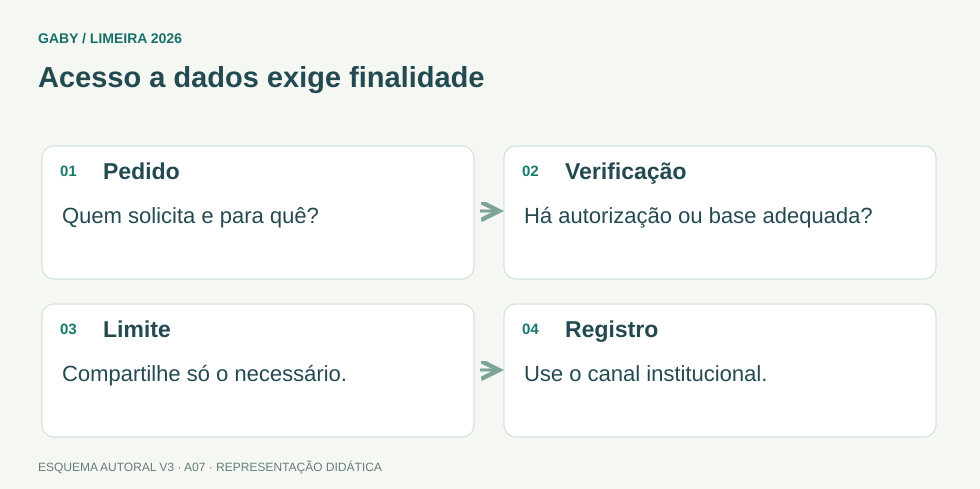

Objetivos do módulo
- Distinguir informação pública, restrita e sigilosa conforme regras aplicáveis.
- Aplicar o princípio de necessidade de acesso.
- Reconhecer condutas éticas no ambiente administrativo.
- Diferenciar ética de moral, identificar conflito de interesses e descrever a postura profissional esperada no trabalho.
- Localizar no Código de Ética do Decreto 1.171/1994 as regras deontológicas, os deveres do item XIV e as vedações do item XV, e na Lei 8.112/1990 os arts. 116, 117 e 143.
- Conciliar sigilo e acesso à informação com base na Lei 12.527/2011.
- Aplicar a LGPD (Lei 13.709/2018): conceitos do art. 5º, princípios do art. 6º, bases legais, consentimento, direitos do titular, segurança e incidentes.
Acesso a dados exige finalidade

Descrição em texto do esquema
- Pedido: Quem solicita e para quê?
- Verificação: Há autorização ou base adequada?
- Limite: Compartilhe só o necessário.
- Registro: Use o canal institucional.
Oficina visual · aplique o esquema
Um colega pede uma lista com telefones pessoais dos usuários para uma finalidade particular. O acesso funcional permite entregar a lista?
Atividade autoral complementar da V3. Registre sua resposta; a resolução está no arquivo de gabarito e revisão.
Mapa do conteúdo
- 1. Ética profissional
- 2. Sigilo não é segredo arbitrário
- 3. Necessidade de acesso
- 4. Conversas e ambiente físico
- 5. Ética diante de erros
- 6. Código de Ética do servidor federal (Decreto 1.171/1994)
- 7. Deveres, proibições e apuração na Lei 8.112/1990
- 8. Sigilo e acesso à informação (Lei 12.527/2011)
- 9. LGPD: alcance e conceitos do art. 5º
- 10. LGPD: os dez princípios do art. 6º
- 11. LGPD: bases legais, consentimento e término do tratamento
- 12. LGPD: direitos do titular
- 13. LGPD no poder público
- 14. LGPD: segurança, incidentes, governança e sanções
1. Ética profissional
Ética no trabalho administrativo envolve honestidade, responsabilidade, respeito, imparcialidade, zelo e uso adequado de recursos e informações. O servidor deve evitar conflitos de interesse e utilização do cargo para vantagens pessoais.
Ética e moral
As duas palavras tratam de certo e errado, mas não são sinônimas. A banca costuma trocar uma definição pela outra.
| Aspecto | Moral | Ética |
|---|---|---|
| O que é | Conjunto de costumes, regras e valores que um grupo aceita como certos. | Reflexão sobre esses costumes: pergunta por que algo é certo e busca princípios que justifiquem a conduta. |
| Alcance | Varia conforme o grupo, o lugar e a época. | Busca princípios mais gerais, como honestidade, justiça e respeito. |
| Caráter | Prático: diz o que fazer. | Teórico e crítico: examina e fundamenta o que se faz. |
| Exemplo | Em uma comunidade, considera-se errado furar fila. | Perguntar por que furar fila é errado e concluir que a conduta fere a igualdade entre as pessoas. |
Ética profissional é a ética aplicada a uma atividade. Quando seus princípios são escritos em forma de deveres e proibições, surge um código de ética; por isso o Código de Ética do servidor federal chama suas regras gerais de “regras deontológicas” (deontologia é o estudo dos deveres de uma profissão).
No serviço público, a conduta ética vai além de cumprir a lei. O Código de Ética federal diz que o servidor não decide apenas entre o legal e o ilegal, mas principalmente entre o honesto e o desonesto (Decreto 1.171/1994, Anexo, regra II). As normas estão na seção 6.
Conflito de interesses
Há conflito de interesses quando um interesse particular do servidor (dele, de parente, de amigo, de empresa) pode influenciar uma decisão ou um ato que ele pratica em nome do órgão. Não é preciso haver prejuízo: basta a situação que compromete a imparcialidade.
A definição legal mais usada como parâmetro é a da Lei 12.813/2013, art. 3º, I, que vale para o Poder Executivo federal: situação gerada pelo confronto entre interesses públicos e privados, que possa comprometer o interesse coletivo ou influenciar, de maneira imprópria, o desempenho da função pública. A mesma lei trata como conflito divulgar ou usar informação privilegiada obtida em razão das atividades, em proveito próprio ou de terceiro (art. 5º, I).
Exemplo: um servidor do setor de compras recebe para conferir a proposta de uma papelaria que pertence à sua cunhada. A conduta ética é comunicar o fato à chefia e não atuar nesse processo, em vez de analisar a proposta “com cuidado redobrado”.
Postura profissional no ambiente de trabalho
Questões de bancas municipais cobram também o comportamento do dia a dia. São atitudes compatíveis com a postura profissional:
- manter convivência respeitosa, pacífica e solidária com colegas, chefias e usuários;
- falar em tom de voz moderado e evitar brincadeiras excessivas, que tiram a concentração de quem trabalha ao lado;
- ficar longe de fofocas e não falar mal da instituição ou dos colegas;
- não usar redes sociais para fins pessoais durante o expediente;
- buscar atualização profissional: conhecer as normas do setor e aprender as ferramentas novas.
Cuidado com a palavra “solidário”. Ser solidário é ajudar o colega no trabalho; não é encobrir erro ou infração dele. O Código de Ética federal proíbe ser conivente com erro “em função de seu espírito de solidariedade” (item XV, alínea c).
2. Sigilo não é segredo arbitrário
Sigilo profissional significa proteger informações cujo acesso é restrito por natureza ou regra aplicável. Não cabe ao servidor classificar tudo como “secreto” por conveniência, nem divulgar dados só por curiosidade de terceiros.
O que é sigilo profissional
Sigilo profissional é o dever de preservar as informações obtidas no exercício da profissão ou da função. Abrange dois grupos de informação:
- as confiadas pelo usuário, como o motivo de um pedido, um laudo ou a situação familiar que ele relata no balcão;
- as conhecidas em razão do serviço, mesmo que ninguém as tenha contado ao servidor, como o que ele lê em um processo, vê em uma tela ou ouve na sala.
O sigilo sustenta a confiança entre quem atende e quem é atendido e protege a privacidade e a dignidade das pessoas.
| Afirmação comum em prova | Certo ou errado | Por quê |
|---|---|---|
| O sigilo só vale quando o chefe pede. | Errado | É dever permanente; não depende de ordem para cada caso. |
| O sigilo só alcança documentos carimbados como “confidencial”. | Errado | Alcança qualquer informação restrita obtida no trabalho, escrita ou falada. |
| O sigilo existe só na área da saúde. | Errado | Vale para todas as áreas; recepcionista, escriturário e secretário de escola também o devem. |
| O sigilo é mera recomendação moral. | Errado | É dever ético e também legal: está em leis e em códigos de ética. |
| Posso contar aos colegas do setor para agilizar o atendimento. | Errado | Só recebe a informação quem precisa dela para trabalhar no caso. |
| O sigilo protege só informações de autoridades e chefes. | Errado | Protege qualquer pessoa cujos dados foram obtidos no serviço. |
Onde o dever está escrito
- Lei 8.112/1990, art. 116, VIII: é dever do servidor guardar sigilo sobre assunto da repartição (seção 7).
- LGPD, arts. 46 e 47: medidas de segurança contra acessos não autorizados e dever de garantir a segurança da informação mesmo após o término do tratamento (seção 14).
- Lei 12.527/2011, arts. 25 e 31: proteção da informação sigilosa e da informação pessoal (seção 8).
- Códigos de ética de cada profissão regulamentada.
O sigilo não é absoluto: ele não impede o servidor de levar uma irregularidade à autoridade competente nem de cumprir ordem judicial. O que ele impede é a revelação a quem não tem direito ou necessidade de saber.
3. Necessidade de acesso
Uma boa regra prática é “acesso conforme necessidade funcional”: mesmo dentro da instituição, nem toda pessoa precisa acessar todo documento. Compartilhamento deve ter finalidade de trabalho e canal apropriado.
Compartilhar só com base legal
Entregar um dado pessoal a outra pessoa, de dentro ou de fora do órgão, é uma forma de tratamento. Por isso exige uma base legal (uma das hipóteses que a LGPD admite, vistas na seção 11) e deve limitar-se ao necessário. Antes de atender a um pedido, responda a quatro perguntas:
- Quem pede? A pessoa está identificada e tem atribuição para tratar do assunto?
- Para quê? A finalidade é de serviço e compatível com o motivo pelo qual o dado foi coletado?
- Qual é a base legal? Há lei, competência do órgão, ordem judicial ou consentimento do titular?
- Quanto é necessário? Entregue apenas os campos indispensáveis, pelo canal institucional, e deixe registro.
Uma solicitação informal (telefonema, mensagem em aplicativo, pedido “de favor” no corredor) não é base legal. Ser colega do mesmo setor também não: o acesso depende de a pessoa precisar do dado para a sua tarefa.
4. Conversas e ambiente físico
Falhas de sigilo podem ocorrer fora de sistemas: tela exposta, documento deixado em impressora, conversa em corredor, foto de tela, descarte inadequado. Segurança da informação também é comportamento.
Medidas práticas de segurança da informação
A LGPD manda adotar medidas técnicas (feitas com tecnologia) e administrativas (regras e rotinas) para proteger os dados de acessos não autorizados (arts. 6º, VII, e 46). No dia a dia do agente administrativo, elas se traduzem assim:
| Medida | Como se aplica | Conduta oposta, errada |
|---|---|---|
| Autenticação | Cada pessoa entra no sistema com identificação e senha próprias; assim o acesso fica restrito e registrado. | Usar a senha de um colega ou qualquer senha disponível. |
| Senha protegida | Senha pessoal, memorizada e não revelada. | Anotar a senha em papel colado no monitor ou sob o teclado. |
| Acesso restrito | Cada perfil enxerga só o que a função exige; pastas e armários com dados pessoais ficam fechados. | Liberar a pasta para todo o setor “para facilitar”. |
| Criptografia | Arquivos e mensagens com dados pessoais seguem codificados, de modo que só o destinatário autorizado consiga ler. | Enviar planilha com dados pessoais em anexo aberto para e-mail particular. |
| Proteção técnica do equipamento | Computador com bloqueio de tela, atualizações e antivírus; cópias de segurança guardadas. | Guardar dados em computador sem nenhuma proteção. |
| Canal adequado | Informação sigilosa circula só em sistema ou e-mail institucional. | Divulgar em rede social, grupo de mensagens ou plataforma pública. |
| Auditoria periódica | Revisar de tempos em tempos quem tem acesso e se os controles funcionam. | Nunca conferir os acessos concedidos. |
Em prova, a alternativa correta é a que restringe o acesso e protege o dado; as erradas facilitam a exposição.
5. Ética diante de erros
Ocultar erro tende a ampliar risco. A conduta responsável é registrar/comunicar conforme procedimento, buscar correção e evitar recorrência. Transparência interna não significa exposição pública indevida.
O mesmo vale para o erro ou a irregularidade de outra pessoa. Avisar o colega “para tomar cuidado” e seguir em frente não resolve: a Lei 8.112/1990, usada como parâmetro, manda levar a irregularidade ao conhecimento da autoridade superior (art. 116, VI), e a autoridade que toma ciência deve promover a apuração imediata (art. 143). Veja a seção 7.
Se o erro expôs dados pessoais, ele pode ser um incidente de segurança, que tem regra própria de comunicação na LGPD (art. 48, seção 14). Comunique à chefia sem demora e preserve os registros.
6. Código de Ética do servidor federal (Decreto 1.171/1994)
O Decreto 1.171, de 22 de junho de 1994, aprova o Código de Ética Profissional do Servidor Público Civil do Poder Executivo Federal. O Código está no Anexo do decreto e é numerado em algarismos romanos (itens I, II, III…), não em artigos. Alguns itens do Capítulo II foram revogados pelo Decreto 6.029/2007.
Como o Código se organiza
| Parte do Anexo | Itens | Conteúdo |
|---|---|---|
| Capítulo I, Seção I | I a XIII | Regras deontológicas: os valores gerais da conduta. |
| Capítulo I, Seção II | XIV (alíneas a a v) | Principais deveres: os deveres fundamentais do servidor. |
| Capítulo I, Seção III | XV (alíneas a a p) | Vedações: o que é proibido. |
| Capítulo II | XVI em diante | Comissões de Ética. A pena que a Comissão aplica é a de censura (item XXII). |
Para o Código, servidor público é todo aquele que presta serviços a órgão do poder estatal por força de lei, contrato ou qualquer ato jurídico, em caráter permanente, temporário ou excepcional, ainda que sem remuneração (item XXIV).
Regras deontológicas mais cobradas
| Regra | O que determina | Como cai |
|---|---|---|
| I | Dignidade, decoro, zelo, eficácia e consciência dos princípios morais devem nortear o servidor, no exercício do cargo ou fora dele. | Dizer que a ética só vale durante o expediente. |
| II | O servidor não pode desprezar o elemento ético: decide não só entre o legal e o ilegal, mas principalmente entre o honesto e o desonesto. | Dizer que basta cumprir a lei. |
| III | A moralidade administrativa não se limita a distinguir o bem do mal; o fim é sempre o bem comum. | Trocar “bem comum” por interesse do órgão ou do servidor. |
| V | O trabalho do servidor perante a comunidade deve ser entendido como acréscimo ao seu próprio bem-estar, porque ele também é cidadão e integra a sociedade. | Afirmar que o trabalho não se relaciona com o bem-estar do servidor ou que ele “deixa de ser cidadão”. |
| VI | A função pública é exercício profissional e se integra à vida particular do servidor. Fatos da sua vida privada podem aumentar ou diminuir o seu bom conceito na vida funcional. | Afirmar que a vida privada não interfere no conceito funcional. |
| VII | A publicidade dos atos administrativos é requisito de eficácia e moralidade, salvo casos de sigilo declarado nos termos da lei. | Tratar o sigilo como regra e a publicidade como exceção. |
| VIII | Toda pessoa tem direito à verdade. O servidor não pode omitir nem falsear a verdade, ainda que ela contrarie o interessado ou a Administração. | Admitir a omissão “para proteger a Administração”. |
| IX | Cortesia, boa vontade, cuidado e tempo dedicados ao serviço caracterizam o esforço pela disciplina. Tratar mal quem paga tributos é causar-lhe dano moral. Danificar bem público por descuido ou má vontade também é ofensa a todos. | Dizer que tratar mal o usuário é só falta de educação, sem dano. |
| X | Deixar pessoa à espera de solução que cabe ao setor, permitindo longas filas ou qualquer atraso, é atitude contra a ética, ato de desumanidade e grave dano moral aos usuários. | Dizer que fila e atraso não têm relação com ética. |
| XI | O servidor deve atenção às ordens legais dos superiores e deve evitar a conduta negligente. | Omitir a palavra “legais”. |
| XII | Ausência injustificada do local de trabalho desmoraliza o serviço público. | Tratar a ausência como assunto apenas pessoal. |
| XIII | Quem trabalha em harmonia com a estrutura, respeitando colegas e cidadãos, colabora e recebe colaboração. | Base das questões de convivência no trabalho. |
Item XIV: deveres fundamentais
O item XIV abre com “São deveres fundamentais do servidor público” e lista as alíneas a a v. As mais cobradas:
| Alínea | Dever |
|---|---|
| a, b | Desempenhar a tempo as atribuições; agir com rapidez, perfeição e rendimento, resolvendo situações de demora, sobretudo diante de filas. |
| c | Ser probo, reto, leal e justo; entre duas opções, escolher a melhor e mais vantajosa para o bem comum. |
| e, g | Tratar cuidadosamente os usuários; ser cortês, ter urbanidade, disponibilidade e atenção, sem preconceito ou distinção de qualquer espécie. |
| f | Ter consciência de que seu trabalho é regido por princípios éticos que se materializam na adequada prestação dos serviços públicos. |
| h | Respeitar a hierarquia, sem temor de representar contra comprometimento indevido da estrutura do Poder. |
| i | Resistir a pressões de superiores, contratantes e interessados que busquem favores ou vantagens indevidas, e denunciá-las. |
| m | Comunicar imediatamente aos superiores todo ato ou fato contrário ao interesse público. |
| q | Manter-se atualizado com as instruções, as normas de serviço e a legislação do órgão. |
| s | Facilitar a fiscalização de todos os atos ou serviços por quem de direito. |
| u | Abster-se de exercer a função com finalidade estranha ao interesse público, mesmo observando as formalidades legais. |
Item XV: vedações
O item XV lista o que é vedado ao servidor (alíneas a a p). As mais cobradas:
| Alínea | É vedado |
|---|---|
| a | Usar o cargo, facilidades, amizades, tempo, posição e influências para obter favorecimento, para si ou para outrem. |
| b | Prejudicar deliberadamente a reputação de outros servidores ou de cidadãos que deles dependam. |
| c | Ser conivente com erro ou infração ao Código de Ética, em função de espírito de solidariedade. |
| d | Usar de artifícios para procrastinar ou dificultar o exercício regular de direito por qualquer pessoa, causando-lhe dano moral ou material. |
| e | Deixar de utilizar os avanços técnicos e científicos ao seu alcance ou do seu conhecimento. |
| f | Permitir que perseguições, simpatias, antipatias, caprichos, paixões ou interesses pessoais interfiram no trato com o público ou com colegas, superiores ou subordinados. |
| g | Pedir ou receber ajuda financeira, gratificação, presente ou vantagem para cumprir sua missão ou para influenciar outro servidor. |
| h | Alterar ou deturpar o teor de documentos que deva encaminhar. |
| l | Retirar da repartição, sem autorização legal, documento, livro ou bem do patrimônio público. |
| m | Usar informações privilegiadas obtidas no serviço em benefício próprio, de parentes, de amigos ou de terceiros. |
7. Deveres, proibições e apuração na Lei 8.112/1990
A Lei 8.112, de 11 de dezembro de 1990, é o regime jurídico dos servidores públicos civis da União, das autarquias e das fundações públicas federais (art. 1º).
Art. 116: deveres do servidor
| Inciso | Dever | Como cai |
|---|---|---|
| I | Exercer com zelo e dedicação as atribuições do cargo. | Texto literal. |
| II | Ser leal às instituições a que servir. | Trocar “instituições” por “chefias”. |
| III | Observar as normas legais e regulamentares. | Texto literal. |
| IV | Cumprir as ordens superiores, exceto quando manifestamente ilegais. | Alternativa que manda “obedecer cegamente”. A ordem manifestamente ilegal não se cumpre. |
| V | Atender com presteza ao público, prestando as informações requeridas, ressalvadas as protegidas por sigilo (alínea a); expedir certidões para defesa de direito (alínea b); atender às requisições para defesa da Fazenda Pública (alínea c). | A ressalva do sigilo está no próprio dever de informar. |
| VI | Levar as irregularidades de que tiver ciência em razão do cargo ao conhecimento da autoridade superior; se houver suspeita de envolvimento desta, a outra autoridade competente para apuração. | Ignorar a irregularidade ou apenas alertar o colega não cumpre o dever. |
| VII | Zelar pela economia do material e pela conservação do patrimônio público. | Uso de material de escritório para fins pessoais. |
| VIII | Guardar sigilo sobre assunto da repartição. | Base legal do sigilo funcional. |
| IX | Manter conduta compatível com a moralidade administrativa. | Texto literal. |
| X | Ser assíduo e pontual ao serviço. | Texto literal. |
| XI | Tratar com urbanidade as pessoas. | Urbanidade é cortesia e respeito. |
| XII | Representar contra ilegalidade, omissão ou abuso de poder. | Representar é comunicar formalmente o fato a quem pode apurá-lo. |
A representação do inciso XII é encaminhada pela via hierárquica e apreciada pela autoridade superior àquela contra a qual é formulada (art. 116, parágrafo único).
Exemplo: a chefe de um setor manda a auxiliar lançar no sistema, com data de ontem, um documento que chegou hoje, para esconder a perda de um prazo. A ordem é manifestamente ilegal: a auxiliar não a cumpre (inciso IV) e representa contra a ilegalidade (inciso XII).
Art. 117: proibições ligadas ao tema
| Inciso | É proibido |
|---|---|
| II | Retirar, sem prévia anuência da autoridade competente, qualquer documento ou objeto da repartição. |
| V | Promover manifestação de apreço ou desapreço no recinto da repartição. |
| IX | Valer-se do cargo para lograr proveito pessoal ou de outrem, em detrimento da dignidade da função pública. |
| XII | Receber propina, comissão, presente ou vantagem de qualquer espécie, em razão de suas atribuições. |
| XVI | Utilizar pessoal ou recursos materiais da repartição em serviços ou atividades particulares. |
| XVIII | Exercer atividades incompatíveis com o exercício do cargo ou função e com o horário de trabalho. |
A revelação de segredo do qual o servidor se apropriou em razão do cargo é caso de demissão (art. 132, IX).
Art. 143: apuração imediata
Leia o artigo em quatro partes:
- Quem: a autoridade que tiver ciência da irregularidade.
- O quê: apuração imediata. É obrigação, não escolha; a autoridade não avalia se “vale a pena”.
- Como: por sindicância ou por processo administrativo disciplinar (PAD).
- Garantia: ampla defesa ao acusado. Não se pune sem procedimento.
São erradas, portanto, as alternativas em que a autoridade ignora o fato por achá-lo leve, resolve informalmente sem registro, aplica a penalidade de imediato ou apenas anota e espera instruções.
8. Sigilo e acesso à informação (Lei 12.527/2011)
A Lei 12.527/2011, Lei de Acesso à Informação (LAI), vale para a União, os Estados, o Distrito Federal e os Municípios (art. 1º). Ela se aplica, portanto, às prefeituras. A LAI resolve a aparente contradição entre “dever de sigilo” e “dever de informar”.
Três tipos de informação
| Tipo | O que é | Quem acessa |
|---|---|---|
| Pública | Regra geral: atos, contratos, gastos, serviços e atividades do órgão. | Qualquer interessado. |
| Sigilosa (art. 4º, III) | Submetida temporariamente a restrição de acesso por ser imprescindível à segurança da sociedade e do Estado. É classificada como reservada (até 5 anos), secreta (até 15 anos) ou ultrassecreta (até 25 anos), conforme o art. 24. | Só quem tem necessidade de conhecê-la e está credenciado (art. 25, §1º). |
| Pessoal (art. 4º, IV) | Relacionada a pessoa natural identificada ou identificável. Quando diz respeito à intimidade, vida privada, honra e imagem, tem acesso restrito independentemente de classificação de sigilo, pelo prazo máximo de 100 anos (art. 31, §1º, I). | Agentes públicos legalmente autorizados e a própria pessoa. Terceiros, só com previsão legal ou consentimento expresso (art. 31, §1º, II). |
Além desses casos, a LAI mantém as demais hipóteses legais de sigilo, como o segredo de justiça (art. 22).
Dispositivos que sustentam o dever de sigilo
| Dispositivo | O que determina | Como cai |
|---|---|---|
| Art. 6º, III | O órgão deve proteger a informação sigilosa e a informação pessoal. | Transparência não elimina a proteção. |
| Art. 25, §2º | Quem obtém acesso a informação classificada como sigilosa fica obrigado a resguardar o sigilo. | Ter acesso não autoriza divulgar. |
| Art. 31, caput | As informações pessoais são tratadas de forma transparente e com respeito à intimidade, vida privada, honra e imagem. | Conciliação entre transparência e privacidade. |
| Art. 31, §2º | Quem obtém acesso a informações pessoais responde por seu uso indevido. | Uso para fim particular. |
| Art. 32, I | É conduta ilícita recusar informação requerida nos termos da lei, retardar deliberadamente o fornecimento ou fornecê-la de forma intencionalmente incorreta, incompleta ou imprecisa. | Negar informação pública também é infração. |
| Art. 32, IV | É conduta ilícita divulgar ou permitir a divulgação, acessar ou permitir acesso indevido a informação sigilosa ou pessoal. | Curiosidade não justifica acesso. |
| Art. 32, V | É conduta ilícita impor sigilo à informação para obter proveito pessoal ou de terceiro, ou para ocultar ato ilegal. | Sigilo não serve para esconder erro. |
Conclusão para a prova: nem “a publicidade vence sempre” nem “o sigilo vence sempre”. O servidor informa o que é público e protege o que a lei restringe.
Consequências da quebra de sigilo
| Esfera | Norma | O que prevê |
|---|---|---|
| Disciplinar | Estatuto do servidor (na esfera federal, Lei 8.112/1990, arts. 116, VIII, e 132, IX) | Violação de dever funcional; a revelação de segredo de que se apropriou em razão do cargo leva à demissão. |
| Penal | Código Penal, art. 325 (violação de sigilo funcional) | Revelar fato de que tem ciência em razão do cargo e que deva permanecer em segredo, ou facilitar a revelação: detenção de seis meses a dois anos, ou multa, se o fato não constitui crime mais grave. Incorre nas mesmas penas quem empresta senha e permite o acesso de pessoas não autorizadas a sistemas ou banco de dados da Administração (§1º, I). |
| Improbidade | Lei 8.429/1992, art. 11, III | É ato de improbidade que atenta contra os princípios da administração revelar, com dolo, fato ou circunstância de que tem ciência em razão das atribuições e que deva permanecer em segredo, propiciando beneficiamento por informação privilegiada ou colocando em risco a segurança da sociedade e do Estado. |
O Código Penal e a Lei 8.429/1992 são leis nacionais: alcançam agentes públicos federais, estaduais e municipais.
9. LGPD: alcance e conceitos do art. 5º
A Lei 13.709, de 14 de agosto de 2018, é a Lei Geral de Proteção de Dados Pessoais (LGPD). É a norma central deste assunto e a mais cobrada. Ela dispõe sobre o tratamento de dados pessoais, inclusive nos meios digitais, por pessoa natural ou por pessoa jurídica de direito público ou privado (art. 1º).
- É lei nacional: vale para empresas e para órgãos públicos de todas as esferas, inclusive prefeituras.
- “Inclusive nos meios digitais” significa que o papel também conta: ficha, livro de registro e prontuário impresso estão na LGPD.
- Protege a pessoa natural (o ser humano). Dados de empresa, como CNPJ e razão social, não são dados pessoais.
- Não se aplica, entre outros casos, ao tratamento feito por pessoa natural para fins exclusivamente particulares e não econômicos, como a agenda de contatos da família (art. 4º, I).
Definições do art. 5º
O art. 5º é um glossário. As questões descrevem uma situação e pedem o nome do conceito, ou dão o nome e pedem a definição.
| Inciso do art. 5º | Conceito | O que a lei diz | Como cai |
|---|---|---|---|
| I | Dado pessoal | Informação relacionada a pessoa natural identificada ou identificável. | “Identificável” inclui a identificação indireta, pelo cruzamento com outros registros. Não é só o nome completo. |
| II | Dado pessoal sensível | Dado sobre origem racial ou étnica, convicção religiosa, opinião política, filiação a sindicato ou a organização de caráter religioso, filosófico ou político, dado referente à saúde ou à vida sexual, dado genético ou biométrico, quando vinculado a uma pessoa natural. | CPF, endereço, telefone e data de nascimento são dados pessoais comuns, não sensíveis. |
| III | Dado anonimizado | Dado relativo a titular que não possa ser identificado, considerando a utilização de meios técnicos razoáveis e disponíveis na ocasião do tratamento. | Dado anonimizado não é dado pessoal (art. 12). |
| IV | Banco de dados | Conjunto estruturado de dados pessoais, estabelecido em um ou em vários locais, em suporte eletrônico ou físico. | Fichário de papel organizado é banco de dados. |
| V | Titular | Pessoa natural a quem se referem os dados pessoais objeto de tratamento. | O titular é o “dono” dos dados, não o órgão que os guarda. |
| VI | Controlador | Pessoa natural ou jurídica, de direito público ou privado, a quem competem as decisões referentes ao tratamento de dados pessoais. | Quem decide para que e como tratar. |
| VII | Operador | Pessoa natural ou jurídica, de direito público ou privado, que realiza o tratamento de dados pessoais em nome do controlador. | Empresa contratada que processa dados para o órgão. Segue as instruções do controlador (art. 39). |
| VIII | Encarregado | Pessoa indicada pelo controlador e operador para atuar como canal de comunicação entre o controlador, os titulares dos dados e a ANPD. | É ponte de comunicação: não julga, não substitui o titular e não dispensa as medidas de segurança. |
| IX | Agentes de tratamento | O controlador e o operador. | O encarregado e o titular não são agentes de tratamento. |
| X | Tratamento | Toda operação realizada com dados pessoais: coleta, produção, recepção, classificação, utilização, acesso, reprodução, transmissão, distribuição, processamento, arquivamento, armazenamento, eliminação, avaliação ou controle da informação, modificação, comunicação, transferência, difusão ou extração. | Só consultar ou só guardar já é tratamento. Não precisa haver alteração nem venda. |
| XI | Anonimização | Utilização de meios técnicos razoáveis e disponíveis no momento do tratamento, por meio dos quais um dado perde a possibilidade de associação, direta ou indireta, a um indivíduo. | É o processo; dado anonimizado (inciso III) é o resultado. |
| XII | Consentimento | Manifestação livre, informada e inequívoca pela qual o titular concorda com o tratamento de seus dados para uma finalidade determinada. | Três adjetivos e uma finalidade determinada. |
| XIII | Bloqueio | Suspensão temporária de qualquer operação de tratamento, mediante guarda do dado pessoal ou do banco de dados. | O dado continua guardado. |
| XIV | Eliminação | Exclusão de dado ou de conjunto de dados armazenados em banco de dados, independentemente do procedimento empregado. | O dado deixa de existir no banco. |
| XVI | Uso compartilhado de dados | Comunicação, difusão, transferência internacional, interconexão ou tratamento compartilhado de bancos de dados pessoais por órgãos e entidades públicos, no cumprimento de suas competências legais, ou entre esses e entes privados, ou entre entes privados. | O titular tem direito de saber com quem houve uso compartilhado (art. 18, VII). |
| XVII | Relatório de impacto à proteção de dados pessoais | Documentação do controlador que contém a descrição dos processos de tratamento que podem gerar riscos às liberdades civis e aos direitos fundamentais, bem como medidas, salvaguardas e mecanismos de mitigação de risco. | Não é lista de bases, termo de consentimento nem aviso de cookies: descreve riscos e como reduzi-los. |
| XIX | Autoridade nacional | Entidade da administração pública responsável por zelar, implementar e fiscalizar o cumprimento da LGPD em todo o território nacional. | É a ANPD. |
Encarregado e ANPD: redação vigente
A Lei 15.352, de 25 de fevereiro de 2026, alterou a LGPD. A ANPD passou a chamar-se Agência Nacional de Proteção de Dados, autarquia de natureza especial vinculada ao Ministério da Justiça e Segurança Pública (art. 55-A). A sigla continua a mesma, e a lei continua a usar também a expressão “autoridade nacional” (art. 5º, XIX). Materiais anteriores a 2026 trazem “Autoridade Nacional de Proteção de Dados”; a função do encarregado, de canal de comunicação, não mudou.
O controlador deve indicar o encarregado e divulgar publicamente sua identidade e seu contato, de preferência no sítio eletrônico (art. 41, caput e §1º). As atividades do encarregado são: aceitar reclamações e comunicações dos titulares, prestar esclarecimentos e adotar providências; receber comunicações da autoridade nacional; orientar funcionários e contratados sobre as práticas de proteção de dados; e executar as demais atribuições determinadas pelo controlador ou por normas complementares (art. 41, §2º).
Anonimização e pseudonimização
| Aspecto | Anonimização | Pseudonimização |
|---|---|---|
| Onde está | Art. 5º, III e XI; art. 12. | Art. 13, §4º. |
| O que acontece | O dado perde a possibilidade de associação, direta ou indireta, a um indivíduo. | O dado só deixa de ser associado ao indivíduo enquanto não se usa uma informação adicional, que o controlador mantém separadamente, em ambiente controlado e seguro. |
| Dá para voltar? | Não, considerados os meios técnicos razoáveis e disponíveis. | Sim: quem tem a informação adicional (a “chave”) identifica a pessoa de novo. |
| Continua sendo dado pessoal? | Não (art. 12), salvo se o processo for revertido ou puder ser revertido com esforços razoáveis. | Sim. |
O teste é sempre o mesmo: com meios razoáveis, alguém consegue voltar à pessoa? Para dizer o que é razoável, a lei manda considerar fatores objetivos, como custo e tempo necessários para reverter o processo, de acordo com as tecnologias disponíveis (art. 12, §1º). Trocar o nome por um código e guardar a tabela de correspondência não é anonimização: é pseudonimização. O tamanho do arquivo não muda essa conclusão.
Bloqueio e eliminação
Bloquear é parar de usar e manter guardado, por um tempo. Eliminar é excluir. Se a questão fala em “suspender temporariamente as operações, preservando a guarda”, a resposta é bloqueio.
10. LGPD: os dez princípios do art. 6º
O art. 6º manda que as atividades de tratamento observem a boa-fé e dez princípios. As questões descrevem uma falha e pedem o princípio violado; por isso, aprenda a palavra-chave de cada um.
| Inciso do art. 6º | Princípio | O que exige | Exemplo de violação |
|---|---|---|---|
| I | Finalidade | Tratamento para propósitos legítimos, específicos, explícitos e informados ao titular, sem tratamento posterior incompatível com essas finalidades. | Telefones coletados na matrícula escolar são usados para divulgar um evento particular. |
| II | Adequação | Compatibilidade do tratamento com as finalidades informadas ao titular, de acordo com o contexto. | O órgão informa que usará os dados para marcar consulta e os cruza com cadastro de dívidas. |
| III | Necessidade | Limitação do tratamento ao mínimo necessário para as finalidades, com dados pertinentes, proporcionais e não excessivos. | Ficha de empréstimo de livro que pede filiação partidária. |
| IV | Livre acesso | Garantia, aos titulares, de consulta facilitada e gratuita sobre a forma e a duração do tratamento e sobre a integralidade de seus dados. | Cobrar taxa para a pessoa ver os próprios dados ou não informar por quanto tempo ficam guardados. |
| V | Qualidade dos dados | Garantia de exatidão, clareza, relevância e atualização dos dados, conforme a necessidade e a finalidade. | Continuar enviando avisos a um telefone que o titular já pediu para corrigir. |
| VI | Transparência | Garantia de informações claras, precisas e facilmente acessíveis sobre o tratamento e os respectivos agentes de tratamento, observados os segredos comercial e industrial. | Aviso de privacidade ilegível, que não diz quem trata os dados nem para quê. |
| VII | Segurança | Medidas técnicas e administrativas aptas a proteger os dados de acessos não autorizados e de situações acidentais ou ilícitas de destruição, perda, alteração, comunicação ou difusão. | Pasta com prontuários em corredor aberto ao público. |
| VIII | Prevenção | Adoção de medidas para prevenir a ocorrência de danos em virtude do tratamento. | Implantar um sistema novo sem avaliar riscos e só agir depois do vazamento. |
| IX | Não discriminação | Impossibilidade de tratamento para fins discriminatórios ilícitos ou abusivos. | Usar o bairro de moradia para dar atendimento pior a um grupo. |
| X | Responsabilização e prestação de contas | Demonstração, pelo agente, da adoção de medidas eficazes e capazes de comprovar o cumprimento das normas, inclusive da eficácia dessas medidas. | Declarar que “cumpre a LGPD” sem ter registro, norma interna ou evidência alguma. |
11. LGPD: bases legais, consentimento e término do tratamento
Art. 7º: hipóteses em que o tratamento é permitido
O tratamento de dados pessoais só pode ocorrer em uma das dez hipóteses do art. 7º, chamadas de bases legais. O consentimento é apenas uma delas (inciso I).
| Inciso do art. 7º | Base legal |
|---|---|
| I | Consentimento do titular. |
| II | Cumprimento de obrigação legal ou regulatória pelo controlador. |
| III | Pela administração pública, tratamento e uso compartilhado de dados necessários à execução de políticas públicas previstas em leis e regulamentos ou respaldadas em contratos, convênios ou instrumentos congêneres. |
| IV | Estudos por órgão de pesquisa, garantida, sempre que possível, a anonimização. |
| V | Execução de contrato ou de procedimentos preliminares de contrato do qual o titular seja parte, a pedido dele. |
| VI | Exercício regular de direitos em processo judicial, administrativo ou arbitral. |
| VII | Proteção da vida ou da incolumidade física do titular ou de terceiro. |
| VIII | Tutela da saúde, exclusivamente em procedimento realizado por profissionais de saúde, serviços de saúde ou autoridade sanitária. |
| IX | Interesses legítimos do controlador ou de terceiro, exceto se prevalecerem direitos e liberdades fundamentais do titular. |
| X | Proteção do crédito. |
No serviço público, as bases mais comuns são as dos incisos II e III. Exemplo: a escola municipal não pede consentimento para registrar a frequência do aluno, porque cumpre obrigação legal e executa política pública de educação.
| Dispositivo | O que determina | Como cai |
|---|---|---|
| Art. 7º, §3º | O tratamento de dados pessoais cujo acesso é público deve considerar a finalidade, a boa-fé e o interesse público que justificaram sua disponibilização. | Dado publicado não é dado “livre”: não pode ser usado para qualquer objetivo nem vendido em cadastro. |
| Art. 7º, §4º | Dispensa o consentimento para dados tornados manifestamente públicos pelo titular, resguardados os direitos do titular e os princípios da lei. | A dispensa não afasta os princípios. |
| Art. 7º, §6º | A eventual dispensa do consentimento não desobriga os agentes das demais obrigações da lei, especialmente os princípios e os direitos do titular. | Tratar por obrigação legal não permite ignorar finalidade, necessidade e segurança. |
Art. 11: dados sensíveis
Para dados pessoais sensíveis, a lista de hipóteses é mais curta. O tratamento ocorre com consentimento dado de forma específica e destacada, para finalidades específicas (art. 11, I), ou, sem consentimento, quando for indispensável para as situações do inciso II, entre elas o cumprimento de obrigação legal ou regulatória (alínea a), a execução de políticas públicas pela administração (alínea b), a proteção da vida (alínea e) e a tutela da saúde (alínea f). Interesse legítimo e proteção do crédito não constam do art. 11.
Art. 8º: regras do consentimento
| Dispositivo | O que determina | Como cai |
|---|---|---|
| Art. 8º, caput e §1º | O consentimento é dado por escrito ou por outro meio que demonstre a manifestação de vontade. Se for escrito, deve constar de cláusula destacada das demais. | Consentimento escondido no meio do contrato. |
| Art. 8º, §2º | Cabe ao controlador o ônus da prova de que o consentimento foi obtido em conformidade com a lei. | Não é o titular quem prova que não consentiu. |
| Art. 8º, §3º | É vedado o tratamento mediante vício de consentimento. | Consentimento obtido por engano ou pressão não vale. |
| Art. 8º, §4º | O consentimento refere-se a finalidades determinadas; autorizações genéricas são nulas. | Termo “para qualquer finalidade” é nulo, mesmo assinado em papel. |
| Art. 8º, §5º | O consentimento pode ser revogado a qualquer momento, mediante manifestação expressa do titular, por procedimento gratuito e facilitado. Ficam ratificados os tratamentos já feitos enquanto não houver pedido de eliminação. | Não há multa, prazo mínimo nem exigência de ação judicial para revogar. |
Para dados de crianças, a lei exige consentimento específico e em destaque dado por pelo menos um dos pais ou pelo responsável legal (art. 14, §1º), e o tratamento deve ocorrer no melhor interesse da criança e do adolescente (art. 14, caput).
Arts. 15 e 16: quando o tratamento termina
O tratamento termina quando a finalidade foi alcançada ou os dados deixaram de ser necessários, quando acaba o período de tratamento, por comunicação do titular (inclusive revogação do consentimento) ou por determinação da autoridade nacional (art. 15).
Terminado o tratamento, a regra é eliminar os dados. O art. 16 autoriza a conservação em quatro casos:
| Inciso do art. 16 | Conservação autorizada para |
|---|---|
| I | Cumprimento de obrigação legal ou regulatória pelo controlador. |
| II | Estudo por órgão de pesquisa, garantida, sempre que possível, a anonimização. |
| III | Transferência a terceiro, respeitados os requisitos de tratamento da lei. |
| IV | Uso exclusivo do controlador, vedado o acesso por terceiro, e desde que os dados sejam anonimizados. |
Exemplo: encerrado um processo seletivo, a prefeitura mantém a documentação dos candidatos pelo prazo que a norma de arquivo determina. A conservação é permitida pelo art. 16, I, mas só para essa obrigação: não libera outros usos nem a divulgação dos dados.
12. LGPD: direitos do titular
Toda pessoa natural tem assegurada a titularidade de seus dados pessoais (art. 17). O art. 18 lista o que o titular pode obter do controlador, a qualquer momento e mediante requisição, em relação aos seus próprios dados.
| Inciso do art. 18 | Direito | Como cai |
|---|---|---|
| I | Confirmação da existência de tratamento. | Saber se o órgão tem dados seus. |
| II | Acesso aos dados. | Acesso aos próprios dados, não aos de terceiros. |
| III | Correção de dados incompletos, inexatos ou desatualizados. | O titular corrige o que é dele; não altera dados de outra pessoa. |
| IV | Anonimização, bloqueio ou eliminação de dados desnecessários, excessivos ou tratados em desconformidade com a lei. | Três providências para três defeitos. Não é ampliar a coleta nem divulgar o banco. |
| V | Portabilidade dos dados a outro fornecedor de serviço ou produto, mediante requisição expressa, conforme regulamentação da autoridade nacional. | Não inclui dados já anonimizados (§7º). |
| VI | Eliminação dos dados tratados com o consentimento do titular, exceto nas hipóteses do art. 16. | A conservação por obrigação legal impede a eliminação. |
| VII | Informação das entidades públicas e privadas com as quais o controlador realizou uso compartilhado de dados. | Saber com quem os dados foram compartilhados. |
| VIII | Informação sobre a possibilidade de não fornecer consentimento e sobre as consequências da negativa. | A lei garante a informação; não promete que a negativa nunca terá efeito. |
| IX | Revogação do consentimento, nos termos do art. 8º, §5º. | Gratuita e facilitada. |
Como os direitos são exercidos
| Dispositivo | O que determina | Como cai |
|---|---|---|
| Art. 18, §1º | O titular tem o direito de peticionar, em relação aos seus dados, contra o controlador perante a autoridade nacional (ANPD). | A instância indicada é a ANPD, não o Tribunal de Contas nem a Câmara Municipal. O §8º admite também os organismos de defesa do consumidor. |
| Art. 18, §3º | Os direitos são exercidos por requerimento expresso do titular ou de representante legalmente constituído, a agente de tratamento. | Pedido expresso; pode ser feito por representante. |
| Art. 18, §4º | Se não for possível adotar a providência de imediato, o controlador responde ao titular: comunica que não é o agente de tratamento e indica, sempre que possível, quem é (inciso I), ou indica as razões de fato ou de direito que impedem a adoção imediata (inciso II). | Silêncio ou resposta sem explicação descumpre a lei. |
| Art. 18, §5º | O requerimento é atendido sem custos para o titular, nos prazos e termos do regulamento. | Não se cobra tarifa, assinatura ou honorário. |
| Art. 19, caput | A confirmação de existência ou o acesso são providenciados em formato simplificado, imediatamente (inciso I), ou por declaração clara e completa, em até 15 dias do requerimento (inciso II). | Dois formatos, dois prazos. |
| Art. 19, §2º | As informações e os dados são fornecidos, a critério do titular, por meio eletrônico seguro e idôneo ou sob forma impressa. | Quem escolhe é o titular; a lei não exclui o papel. |
| Art. 20, caput | O titular pode solicitar a revisão de decisões tomadas unicamente com base em tratamento automatizado de dados pessoais que afetem seus interesses. | Direito de pedir revisão; não é direito a resultado favorável nem proibição de automação. |
| Art. 20, §1º | O controlador fornece, sempre que solicitadas, informações claras e adequadas sobre os critérios e procedimentos da decisão automatizada, observados os segredos comercial e industrial. | Nem “o computador decidiu” nem divulgação de todos os segredos. |
Perante o poder público, os prazos e procedimentos para exercer esses direitos seguem a legislação específica, em especial a Lei do Habeas Data, a Lei do Processo Administrativo e a Lei de Acesso à Informação (art. 23, §3º).
Exemplo de decisão automatizada: um sistema classifica sozinho os pedidos de bolsa de um programa e indefere o de uma moradora. Ela pode pedir a revisão (art. 20) e perguntar quais critérios foram usados (art. 20, §1º).
13. LGPD no poder público
O Capítulo IV da LGPD (arts. 23 a 32) traz regras próprias para órgãos e entidades públicos, o que inclui a administração municipal.
| Dispositivo | O que determina | Como cai |
|---|---|---|
| Art. 23, caput | O tratamento pelo poder público deve atender à finalidade pública, na persecução do interesse público, para executar competências legais ou cumprir atribuições legais do serviço público. | O órgão trata dados para exercer sua competência, não para qualquer fim. |
| Art. 23, I | O órgão informa as hipóteses em que trata dados pessoais, com informações claras e atualizadas sobre previsão legal, finalidade, procedimentos e práticas, em veículos de fácil acesso, preferencialmente em seu sítio eletrônico. | Transparência ativa sobre o tratamento. |
| Art. 23, III | O órgão indica um encarregado quando realiza operações de tratamento de dados pessoais. | Órgão público também tem encarregado. |
| Art. 25 | Os dados são mantidos em formato interoperável e estruturado para o uso compartilhado, com vistas à execução de políticas públicas e à prestação de serviços públicos. | Compartilhar entre órgãos é possível, dentro da finalidade. |
| Art. 26, caput | O uso compartilhado pelo poder público atende a finalidades específicas de execução de políticas públicas e atribuição legal, respeitados os princípios do art. 6º. | Compartilhamento sem finalidade específica é irregular. |
| Art. 26, §1º | É vedado ao poder público transferir a entidades privadas dados pessoais de suas bases, salvo exceções, como execução descentralizada de atividade pública que exija a transferência, dados acessíveis publicamente e previsão legal ou respaldo em contratos, convênios ou instrumentos congêneres. | A regra é não transferir a particulares. |
| Art. 31 | Havendo infração à lei no tratamento por órgãos públicos, a autoridade nacional pode enviar informe com medidas cabíveis para fazer cessar a violação. | A ANPD também fiscaliza o poder público. |
| Art. 32 | A autoridade nacional pode solicitar a agentes do poder público a publicação de relatórios de impacto à proteção de dados pessoais e sugerir padrões e boas práticas. | Relatório de impacto aplicado ao setor público. |
Transparência do ato e proteção do dado
A LGPD não revoga a Lei de Acesso à Informação; as duas convivem. A prefeitura divulga atos, contratos e gastos (publicidade) e, ao mesmo tempo, protege os dados pessoais que não são necessários a essa divulgação. Na prática, publica-se o que a lei manda publicar e ocultam-se, por exemplo, endereço residencial, telefone e dados de saúde das pessoas citadas.
14. LGPD: segurança, incidentes, governança e sanções
| Dispositivo | O que determina | Como cai |
|---|---|---|
| Art. 46, caput | Os agentes de tratamento devem adotar medidas de segurança, técnicas e administrativas, aptas a proteger os dados pessoais de acessos não autorizados e de situações acidentais ou ilícitas de destruição, perda, alteração, comunicação ou qualquer forma de tratamento inadequado ou ilícito. | Base legal de autenticação, acesso restrito e criptografia. |
| Art. 46, §2º | As medidas devem ser observadas desde a fase de concepção do produto ou do serviço até a sua execução. | Segurança começa no projeto, não depois do primeiro incidente. |
| Art. 47 | Os agentes de tratamento ou qualquer outra pessoa que intervenha em uma das fases do tratamento obrigam-se a garantir a segurança da informação, mesmo após o seu término. | O dever alcança todos os que participam, não só o controlador, e continua depois do fim do contrato ou do vínculo. |
| Art. 48, caput | O controlador deve comunicar à autoridade nacional e ao titular a ocorrência de incidente de segurança que possa acarretar risco ou dano relevante aos titulares. | Dois destinatários: ANPD e titulares. Ocultar o incidente ou apagar evidências é o oposto do dever. |
| Art. 48, §1º | A comunicação é feita em prazo razoável, conforme definido pela autoridade nacional, e menciona, no mínimo: a natureza dos dados afetados, os titulares envolvidos, as medidas de segurança utilizadas, os riscos, os motivos da demora (se houver) e as medidas para reverter ou mitigar os efeitos. | O prazo é o fixado em regulamento da ANPD. |
| Art. 49 | Os sistemas usados no tratamento devem atender aos requisitos de segurança, aos padrões de boas práticas e de governança e aos princípios gerais da lei. | Sistema sem controle de acesso descumpre a lei. |
| Art. 50, caput | Controladores e operadores podem formular regras de boas práticas e de governança: procedimentos, normas de segurança, ações educativas, mecanismos internos de supervisão e de mitigação de riscos. | Governança é organização interna para cumprir a lei. |
| Art. 50, §2º, I | O controlador pode implementar programa de governança em privacidade. No mínimo, o programa: aplica-se a todo o conjunto de dados sob seu controle (alínea b); adapta-se à estrutura, à escala, ao volume das operações e à sensibilidade dos dados (alínea c); baseia-se em avaliação sistemática de impactos e riscos (alínea d); conta com planos de resposta a incidentes e remediação (alínea g); e é atualizado constantemente, com monitoramento contínuo e avaliações periódicas (alínea h). | Deixar os dados mais sensíveis fora do programa, dispensar a avaliação de risco ou prometer que nunca haverá incidente não é governança. |
Exemplo: uma estagiária encerra o contrato com a secretaria e leva no celular fotos de fichas de atendimento. O fim do vínculo não a libera: ela interveio no tratamento e continua obrigada a garantir a segurança daqueles dados (art. 47). Guardar cópia em casa não lhe dá direito de divulgar.
O que é incidente de segurança
É o acontecimento que compromete a proteção dos dados: acesso não autorizado, perda, destruição, alteração ou divulgação indevida, por ação intencional ou por acidente. Envio de planilha ao destinatário errado, pen drive extraviado e invasão de sistema são exemplos. O servidor que percebe o fato avisa a chefia de imediato, pelo canal interno; a decisão de comunicar à ANPD e aos titulares cabe ao controlador.
Responsabilidade e sanções
- Reparação: o controlador ou o operador que, no tratamento de dados, causar dano patrimonial, moral, individual ou coletivo, em violação à legislação de proteção de dados, é obrigado a repará-lo (art. 42).
- Sanções administrativas (art. 52): aplicadas pela autoridade nacional, após procedimento que assegure ampla defesa. Incluem advertência, multa simples de até 2% do faturamento da pessoa jurídica de direito privado, limitada a R$ 50.000.000,00 por infração, multa diária, publicização da infração, bloqueio e eliminação dos dados, e suspensão ou proibição de atividades de tratamento.
- Órgãos públicos (art. 52, §3º): podem receber as sanções dos incisos I, IV, V, VI, X, XI e XII, isto é, advertência, publicização, bloqueio, eliminação, suspensões e proibição. As multas dos incisos II e III não estão nessa lista. Isso não afasta a responsabilidade do servidor pela Lei 8.112/1990, pela Lei 8.429/1992 e pela Lei 12.527/2011.
Exemplos resolvidos passo a passo
Exemplo 1
Situação: Colega de outro setor pede dados de cidadão “só por curiosidade”.
Exemplo 2
Situação: Documento confidencial ficou na impressora compartilhada.
Exemplo 3
Situação: Servidor percebe que lançou dado incorreto.
Exemplo 4 — lista com protocolos
Situação: A secretaria de educação divulga a lista de espera das creches com o número de protocolo no lugar do nome da criança. A tabela que liga cada protocolo à criança fica guardada em pasta de acesso restrito. Os dados da lista foram anonimizados?
Exemplo 5 — pedido por telefone
Situação: Uma pessoa liga para o setor de cadastro, diz ser advogada e pede o endereço e o telefone de um contribuinte “para resolver um assunto urgente”. O atendente tem os dados na tela.
Exemplo 6 — correção, cópia impressa e taxa
Situação: Uma moradora prova que seu sobrenome está grafado errado no cadastro do posto de saúde. Pede a correção e uma cópia impressa dos dados que o posto tem sobre ela. O atendente quer cobrar taxa de impressão e diz que só fornece arquivo por e-mail.
Exemplo 7 — qual princípio foi violado
Situação: Para emitir a carteirinha da biblioteca municipal, o formulário exige nome, telefone, religião e doenças que a pessoa tem. Meses depois, os telefones são usados para divulgar a campanha de um candidato.
Exemplo 8 — dever ou vedação
Situação: Uma questão pede “um dever fundamental do servidor” segundo o Código de Ética do Decreto 1.171/1994 e traz, entre as alternativas: (1) manter-se atualizado com as normas de serviço e a legislação do órgão; (2) alterar o teor de documento que deva encaminhar, quando julgar conveniente; (3) usar amizades e influências para obter favorecimento a um conhecido.
Pegadinhas e erros frequentes
- Confundir coleguismo com autorização de acesso.
- Conversar sobre casos sensíveis em local público.
- Compartilhar senha.
- Apagar evidência de erro sem procedimento.
- Tratar ética e moral como sinônimos: moral é o conjunto de costumes de um grupo; ética é a reflexão sobre eles.
- Marcar vedação do item XV do Decreto 1.171/1994 como se fosse dever do item XIV.
- Entender “solidariedade” como conivência com erro de colega.
- Achar que ordem de superior sempre se cumpre: a manifestamente ilegal não (Lei 8.112/1990, art. 116, IV).
- Aceitar que a autoridade puna na hora ou resolva “informalmente”: o art. 143 exige apuração imediata por sindicância ou PAD, com ampla defesa.
- Pensar que dado pessoal é só o nome, ou só o que está em computador: basta a pessoa ser identificável, e o suporte pode ser físico.
- Classificar CPF, endereço ou data de nascimento como dado sensível.
- Chamar de anonimização a troca de nome por código quando existe chave de associação.
- Confundir controlador (decide), operador (trata em nome do controlador) e encarregado (canal de comunicação).
- Confundir bloqueio (suspensão temporária, com guarda) e eliminação (exclusão).
- Achar que todo tratamento depende de consentimento, ou que a dispensa do consentimento afasta os princípios.
- Tratar dado de acesso público como dado de uso livre.
- Supor que o dever de segurança acaba com o fim do contrato ou do tratamento (LGPD, art. 47).
- Trocar finalidade por adequação ou por necessidade; trocar livre acesso por transparência.
Resumo de prova
- Ética envolve integridade, respeito e responsabilidade.
- Acesso deve ter finalidade funcional.
- Sigilo também depende de comportamento físico.
- Senha é pessoal e não deve ser compartilhada.
- Erros devem ser tratados com rastreabilidade.
- Moral: costumes e valores de um grupo. Ética: reflexão sobre a conduta. Ética profissional gera códigos de ética.
- Sigilo profissional: dever ético e legal de preservar o que foi confiado ou conhecido em razão do serviço; é permanente e vale para todas as áreas.
- Decreto 1.171/1994 (federal, usado como parâmetro): regras deontológicas I a XIII; deveres fundamentais no item XIV; vedações no item XV.
- Regras V, VI, VIII, IX e X: trabalho como acréscimo ao bem-estar; vida privada reflete no conceito funcional; não omitir nem falsear a verdade; cortesia, e tratar mal é dano moral; filas e atrasos são atitude contra a ética.
- Lei 8.112/1990, art. 116: cumprir ordens, exceto as manifestamente ilegais (IV); levar irregularidades à autoridade (VI); zelar pelo patrimônio (VII); guardar sigilo sobre assunto da repartição (VIII); representar contra ilegalidade (XII).
- Lei 8.112/1990, art. 143: apuração imediata, por sindicância ou PAD, com ampla defesa.
- LAI: publicidade é preceito geral e sigilo é exceção; informação pessoal tem acesso restrito (art. 31).
- LGPD, art. 5º: dado pessoal (identificada ou identificável); sensível (rol do inciso II); controlador decide; operador trata em nome do controlador; encarregado é canal de comunicação com titulares e ANPD; tratamento é toda operação.
- Anonimização não tem volta por meios razoáveis; pseudonimização tem, com a informação adicional (art. 13, §4º).
- Princípios do art. 6º: finalidade, adequação, necessidade, livre acesso, qualidade dos dados, transparência, segurança, prevenção, não discriminação, responsabilização e prestação de contas.
- Art. 7º: dez bases legais; consentimento é uma delas. Art. 8º: ônus da prova do controlador; autorizações genéricas são nulas; revogação gratuita e facilitada.
- Art. 16, I: conservação após o término para cumprir obrigação legal ou regulatória.
- Art. 18: correção; anonimização, bloqueio ou eliminação; informação sobre uso compartilhado e sobre as consequências da negativa; peticionar à ANPD; atendimento sem custos.
- Arts. 19 e 20: entrega eletrônica ou impressa, a critério do titular; revisão de decisão automatizada e informação sobre critérios.
- Arts. 46 a 50: medidas de segurança desde a concepção; dever que persiste após o término; comunicação de incidente à ANPD e aos titulares; programa de governança com plano de resposta a incidentes.
Exercícios do módulo
Resolva sem consultar o arquivo de gabarito. As questões são autorais e construídas para treinar os conceitos do edital.
- obrigatório
- forma de eficiência
- inadequado
- boa prática
- para qualquer colega
- quando necessário e autorizado
- por curiosidade
- sempre sem registro
- risco de sigilo
- apenas problema estético
- melhoria de eficiência
- publicidade obrigatória
- favorecimento
- uso pessoal de recursos sem limite
- ocultação de erros
- honestidade e responsabilidade
- não falar com ninguém
- destruir registros
- proteger informação restrita conforme regras
- ocultar todo ato público
- enviar em grupo
- não fornecer sem necessidade/autorização
- fornecer por amizade
- publicar
- corrigir conforme procedimento e preservar histórico
- apagar tudo silenciosamente
- culpar usuário
- ignorar
- aumentar segurança
- ser obrigatório
- substituir registro
- violar sigilo
- publicidade
- arquivamento
- eticamente inadequado
- eficiente
- publicidade vence sempre
- devem ser conciliados conforme natureza e regras
- são sempre incompatíveis
- sigilo vence sempre
Quando terminar, abra Assistente Administrativo 07 - Ética e Sigilo Profissional - Gabarito e Revisão.
Checklist de domínio
- ☐ Distinguir informação pública, restrita e sigilosa conforme regras aplicáveis.
- ☐ Aplicar o princípio de necessidade de acesso.
- ☐ Reconhecer condutas éticas no ambiente administrativo.
- ☐ Explicar a diferença entre ética e moral e dar um exemplo de conflito de interesses.
- ☐ Definir sigilo profissional e apontar onde o dever está previsto.
- ☐ Separar deveres (item XIV) de vedações (item XV) do Decreto 1.171/1994 e explicar as regras V, VI, VIII, IX e X.
- ☐ Citar os deveres do art. 116 da Lei 8.112/1990 ligados a ordens ilegais, irregularidades, patrimônio e sigilo, e o que o art. 143 exige da autoridade.
- ☐ Conciliar sigilo e publicidade com a Lei 12.527/2011.
- ☐ Definir, pelo art. 5º da LGPD: dado pessoal, dado sensível, dado anonimizado, banco de dados, titular, controlador, operador, encarregado, tratamento, bloqueio, eliminação e relatório de impacto.
- ☐ Diferenciar anonimização de pseudonimização.
- ☐ Identificar, em um caso, qual dos dez princípios do art. 6º foi violado.
- ☐ Listar bases legais além do consentimento e as regras do art. 8º (ônus da prova, autorizações genéricas, revogação).
- ☐ Enumerar os direitos do titular dos arts. 18 a 20 e como são atendidos.
- ☐ Explicar os arts. 46, 47, 48 e 50 da LGPD e aplicar medidas práticas de segurança (autenticação, senha, acesso restrito, criptografia).
Meta do módulo: 80% ou mais nas questões, sem depender de consulta.
Referências e conteúdos auxiliares
- Brasil — Lei 13.709/2018, LGPD, texto compiladoPrincípios de finalidade e necessidade, proteção de dados e tratamento pelo poder público.
- Brasil — Constituição Federal, texto compiladoLeia os dispositivos indicados no módulo e suas remissões no texto oficial.
- Brasil — Lei 13.709/2018 (LGPD), texto compiladoArts. 1º, 4º, 5º, 6º, 7º, 8º, 11 a 20, 23 a 32, 37, 39, 41, 42, 46 a 50, 52 e 55-A; redação vigente do art. 5º, VIII e XIX. Conferido em 17/11/2026.
- Brasil — Lei 15.352/2026Alteração do art. 5º, VIII e XIX, e do art. 55-A da LGPD (Agência Nacional de Proteção de Dados). Conferido em 17/11/2026.
- Brasil — Decreto 1.171/1994, Código de Ética Profissional do Servidor Público Civil do Poder Executivo FederalRegras deontológicas I a XIII, deveres do item XIV, vedações do item XV e itens XVI, XXII e XXIV. Conferido em 17/11/2026.
- Brasil — Lei 8.112/1990, texto compiladoArts. 1º, 116, 117, 132, IX, e 143. Conferido em 17/11/2026.
- Brasil — Lei 12.527/2011, Lei de Acesso à InformaçãoArts. 1º, 3º, 4º, 6º, 22, 24, 25, 31 e 32. Conferido em 17/11/2026.
- Brasil — Lei 8.429/1992, Lei de Improbidade AdministrativaArt. 11, caput e inciso III, na redação da Lei 14.230/2021. Conferido em 17/11/2026.
- Brasil — Código Penal (Decreto-Lei 2.848/1940), texto compiladoArt. 325, caput e §1º (violação de sigilo funcional). Conferido em 17/11/2026.
- Brasil — Lei 12.813/2013, conflito de interesses no Poder Executivo federalArts. 3º, I, e 5º, I. Conferido em 17/11/2026.
Referências externas de apoio consultadas para a V3 em 27/09/2026. A origem das questões é o material autoral do projeto; estes links não indicam que uma instituição publicou ou validou os exercícios. As páginas externas precisam de internet. Em informática, confira a versão do programa; em legislação, observe o recorte e as regras de atualização do edital.